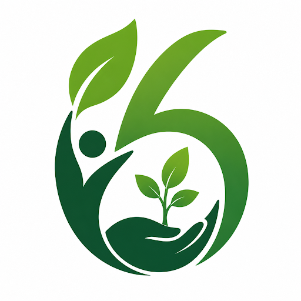
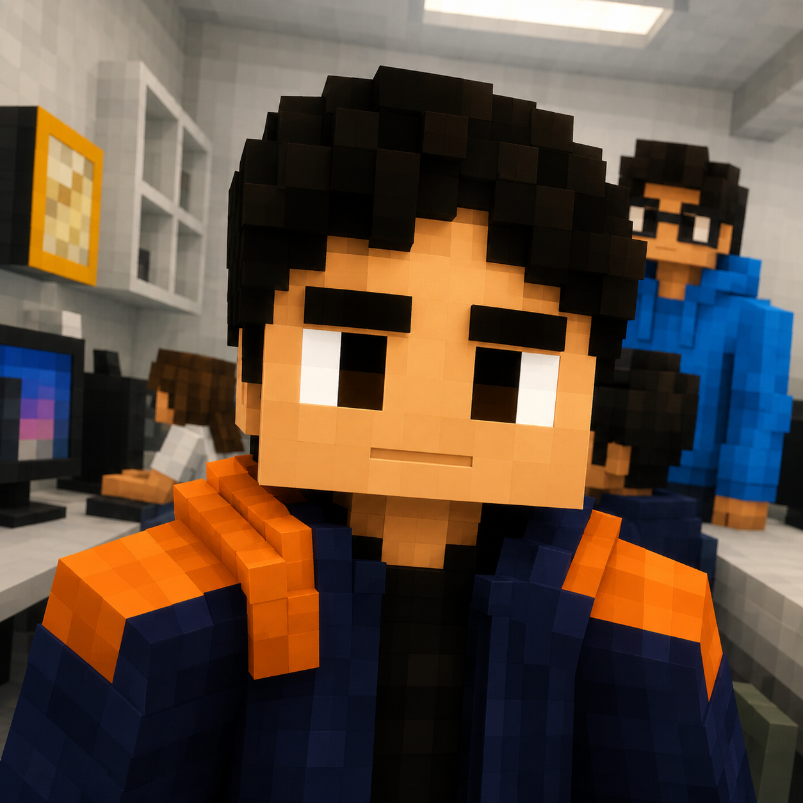

Pedro Henrique Florencio
O Designer

Seja voluntárioSomos seis jovens unidos por um propósito: transformar o mundo em um lugar mais sustentável, consciente e colaborativo.
A Six for the Earth nasceu da união de seis alunos que acreditam que pequenas atitudes podem gerar grandes transformações.
Incentivar pessoas a participarem de ações que contribuam para um planeta mais sustentável.
Conectar voluntários a oportunidades de ajudar comunidades e o meio ambiente.
Solidariedade, sustentabilidade, colaboração, responsabilidade e respeito.
Cada integrante possui uma função diferente, mas todos trabalham pelo mesmo propósito.
O Designer
O Gestor
O Bardo
O Estrategista

O Arquiteto
O 2º Bardo
Ser voluntário é muito mais do que ajudar. É fazer parte de uma comunidade que acredita que podemos construir um futuro melhor juntos.
Participe de ações que contribuem diretamente para a preservação ambiental.
Pequenas ações realizadas por muitas pessoas podem gerar grandes resultados.
O voluntariado ajuda a desenvolver comunicação, liderança, organização e trabalho em equipe.
Faça parte de uma comunidade formada por pessoas que compartilham os mesmos ideais.
Para se tornar voluntário da Six for the Earth, basta acessar o nosso aplicativo e escolher uma oportunidade de participação.
Acesse o aplicativo da Six for the Earth.
Encontre ações de voluntariado que combinam com você.
Participe das ações e ajude a construir um futuro melhor.
Confira algumas das principais dúvidas sobre a Six for the Earth.
A Six for the Earth é uma iniciativa criada por seis alunos com o objetivo de incentivar o voluntariado e ações voltadas para a sustentabilidade.
Qualquer pessoa interessada em contribuir com ações sociais e ambientais pode se cadastrar na plataforma.
Não. O voluntariado é uma oportunidade para aprender, colaborar e desenvolver novas habilidades.
A inscrição é realizada através do aplicativo. Basta criar uma conta utilizando seu nome, sobrenome, e-mail e senha.
Sim. O voluntário pode deixar de participar das atividades quando desejar, de acordo com as regras de cada ação.
Você pode participar de ações ambientais, incentivar outras pessoas, reduzir o desperdício e adotar hábitos mais sustentáveis no dia a dia.
Uma pequena atitude pode ser o começo de uma grande mudança.
Quero ser voluntário